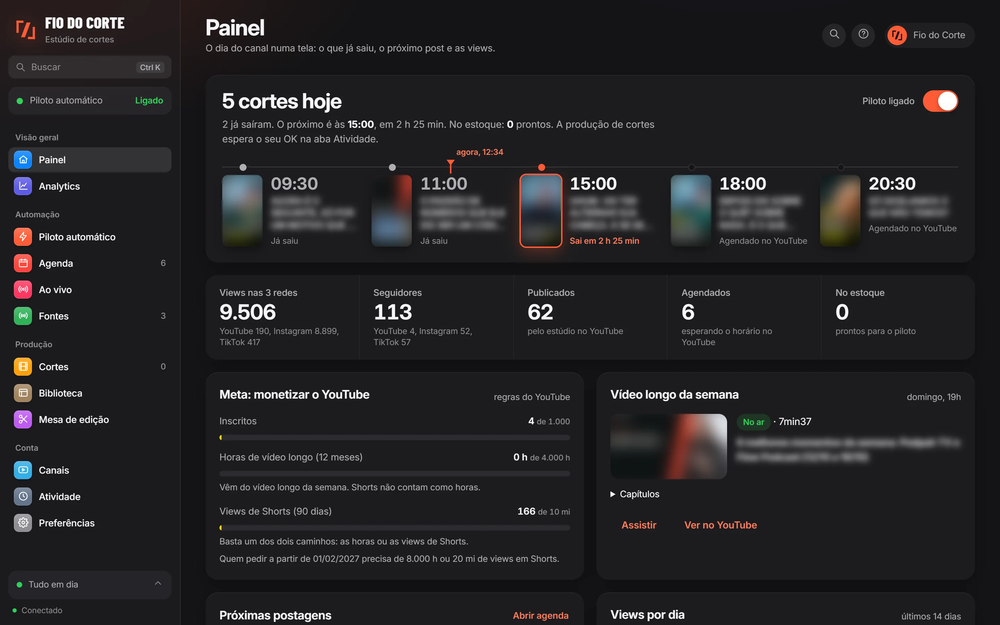
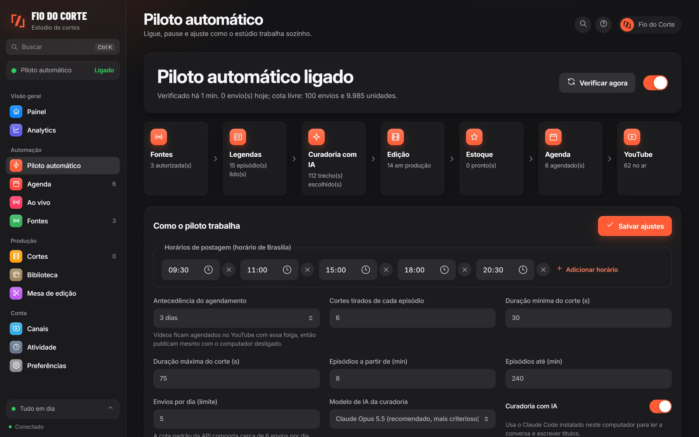
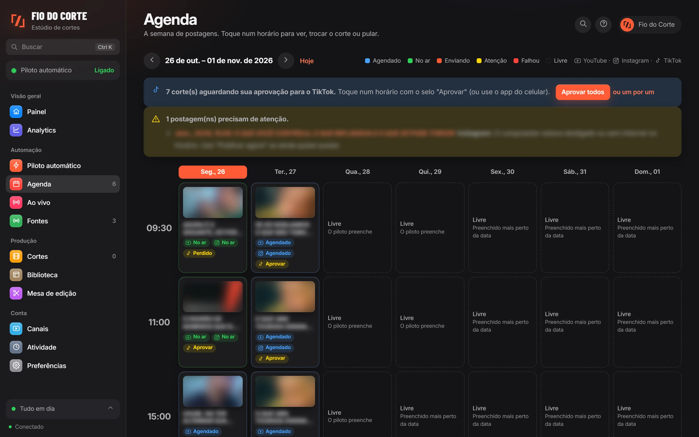
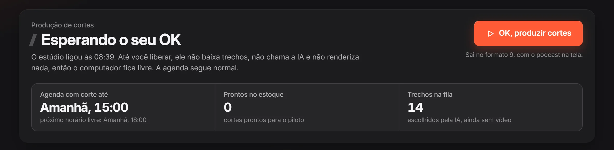
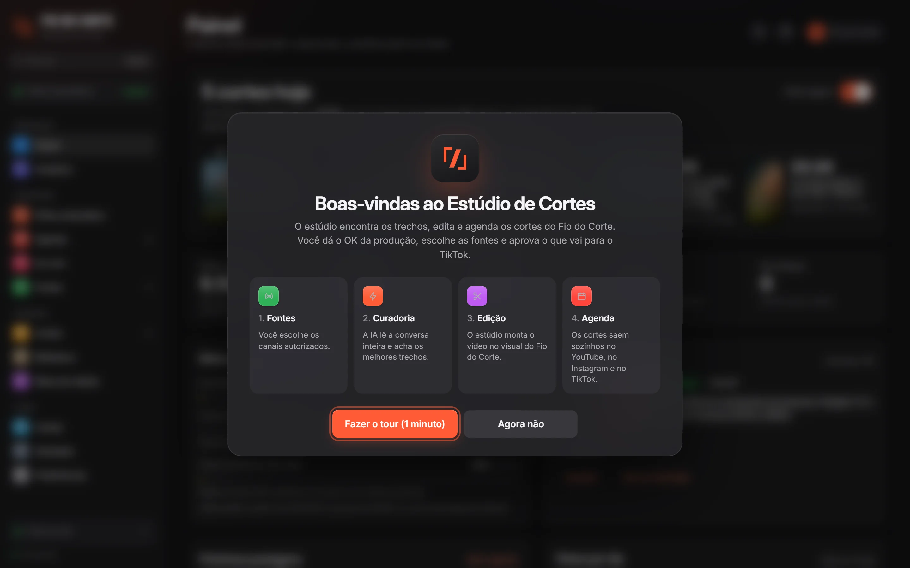
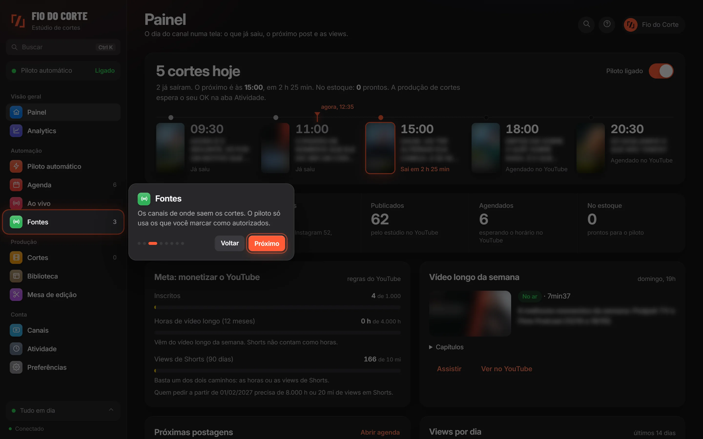
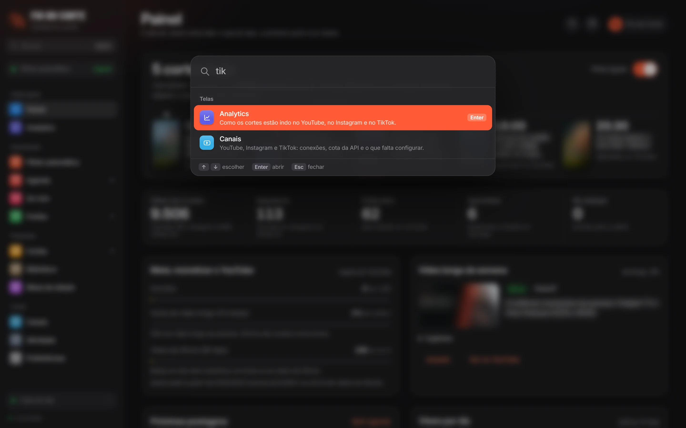
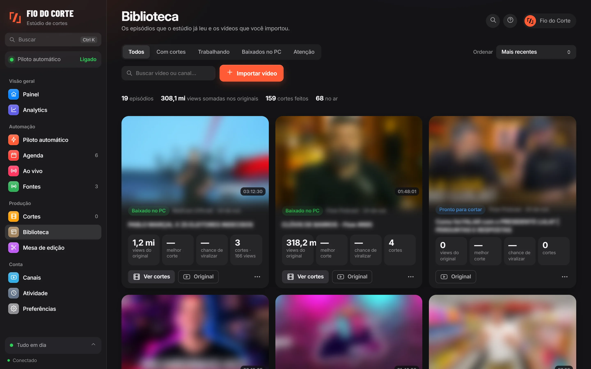
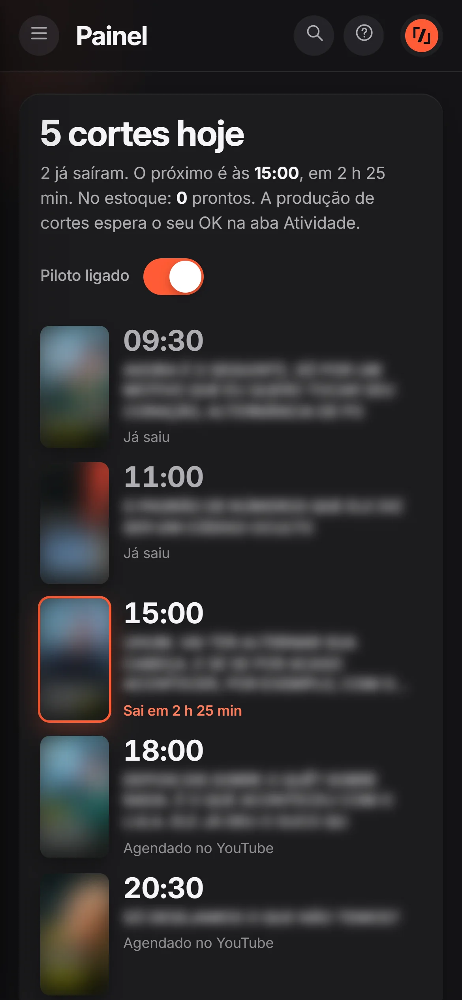
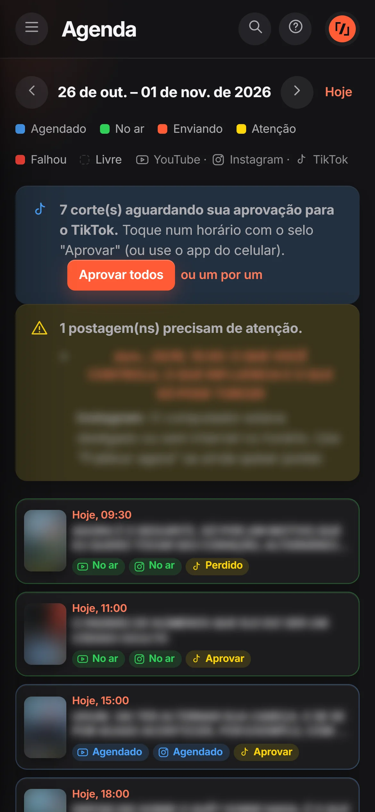

Estúdio de Cortes
Do episódio de duas horas ao corte de um minuto. O estúdio acha os melhores trechos dos podcasts, edita no visual do Fio do Corte e agenda no YouTube, no Instagram e no TikTok.

- horários por dia
- 5
- redes ao mesmo tempo
- 3
- cortes feitos
- 159
- vídeos no ar no YouTube
- 62
Números do estúdio em 26 de outubro de 2026, treze dias depois de o canal começar.
Quatro passos, sem você precisar estar lá.
Você liga o piloto uma vez. Daí em diante, o estúdio faz o trabalho lento de um canal de cortes, todos os dias.
Fontes
Você escolhe os canais. Só entram podcasts que permitem cortes ou que têm acordo com o criador.
Curadoria com IA
A IA lê a conversa inteira e escolhe trechos com começo, meio e fim. Cada um ganha uma nota de 0 a 10.
Edição
O vídeo sai vertical, com close em quem fala, legenda palavra por palavra, capa e trilha livre de direitos.
Agenda
Os cortes ficam agendados nos horários do canal. O YouTube publica mesmo com o computador desligado.

O podcast na frente.
Cada corte mostra quem fala em close, com a legenda uma palavra por vez. Uma imagem de apoio só entra no instante em que a coisa é dita, e todas juntas nunca passam de um quinto do vídeo.
Medido num corte real de 53 segundos: eram 13 imagens, cobrindo 39 segundos. Com a regra nova, o mesmo corte tem 3, e cada uma aparece na palavra dita.
- Caixas rosa com o nome de quem é citado e o fato principal da história.
- Trilha de suspense por baixo da fala, com o áudio medido e sem estourar.
- Capa no estilo dos grandes podcasts, escolhida pela IA entre os quadros do corte.
Uma agenda, três redes.
YouTube, Instagram e TikTok seguem os mesmos horários. Toque num horário para ver o corte, trocar por outro, pular ou tirar da agenda.

As decisões ficam com você.
O estúdio faz o trabalho repetitivo. O que importa espera a sua palavra.

Produção só com o seu OK
Toda vez que o estúdio liga, ele espera você liberar antes de baixar trechos, chamar a IA ou renderizar.
Cada post do TikTok aprovado
Quem pode ver, comentários e divulgação: você escolhe em cada post, como pedem as regras do TikTok.
Tirar da agenda não apaga nada
O vídeo fica privado no canal, o corte volta para o estoque e o piloto põe outro no horário.
Feito para aprender em um minuto.
Cada aba diz para que serve. Na primeira vez, um tour curto mostra as telas principais. E o Ctrl+K leva a qualquer lugar.




Cabe no celular.
A janela do estúdio se ajusta a qualquer tela. E o app do celular aprova os posts do TikTok e dá o OK da produção de onde você estiver.


Do jeito certo.
Só fontes autorizadas
O piloto só usa canais que permitem cortes ou que têm acordo com o criador. Temas como eleição nunca saem sozinhos.
Trilhas e imagens livres
Músicas, efeitos e vídeos de apoio com licença de uso comercial. Fotos em domínio público ou com crédito do autor.
Roda no seu computador
Os acessos às redes ficam guardados com a proteção do Windows. A postagem usa só as APIs oficiais.